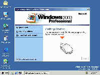

|
|
| 当前位置：电脑报电子版 > 1999 年 > 39 期 > 软件世界 > Windows 2000 RC2版安装实录 |
| 《 Windows 2000 RC2版安装实录 》 |
| 9月15日，Windows 2000第二候选版（RC2）问世，这是Windows 2000正式发行之前的最后一个版本。此次共发布了三个版本：适合单机桌面运行的Professional专业版、面向小型企业服务器的Server服务器版和面向中型企业网络服务器的Advanced
Server高级服务器版。其中专业版的安装配置为：至少133 MHz奔腾处理器，32M以上内存，建议使用64M，至少650MB硬盘空间。 Windows 2000有三种安装方式，一是在一个空的硬盘上安装；二是当已经安装有其它的系统，如Windows 9x系列，则可以选择安装在不同的硬盘或分区上，成为双启动系统，启动时会提示选择从哪个系统启动计算机；三是在原有的系统上升级，可以从Windows 95、Windows 98、Windows NT上直接升级到Windows 2000。由于我的计算机上已经装有中文的Windows 98，而这个版本的Windows 2000只能从英文的Windows升级，所以选择了第二种安装方式。 安装之前，为了预防安装过程可能造成的对原来的中文Windows 98汉字文件名的破坏，就先对重要文件进行了备份：将桌面文件\windows\desktop\＊.＊，开始菜单\windows\start menu\＊.＊两个目录备份，将注册表文件\windows\system.dat，\windows\user.dat备份。然后为了使系统环境保持干净，又做了一张启动盘，拷上HIMEM.SYS和SMARTDRV.EXE并进行配置（安装时一定要启动SMARTDRV后台缓冲，否则你的安装过程会像一场噩梦），然后由软盘启动计算机，进入光盘中的安装目录，运行i386\WINNT开始安装程序。 第一步，MSDOS方式。安装程序首先要做的是将必需的安装文件拷贝到硬盘上，约145M文件，耗时6分钟。这样做的原因是由于安装程序为了保证下次启动时能找到相应的安装程序。拷贝完毕系统重新启动，此时要将软盘取出，由硬盘启动计算机。 第二步，文本安装界面。重启后，出现选择菜单，一个选择是运行以前的操作系统，另一个是Windows 2000 Professional安装，选择第二个（或等2秒钟自动进入），继续安装过程，程序要求按F8进行协议确认，这里是一大段英文，主要是法律上的协议等相关条文。下一屏幕要求选择安装分区，或在空余的硬盘上建立新的分区，如果选择了已存在的分区，还会提示是否转换为NTFS－Windows NT的专用文件系统。注意：NTFS系统只能被Windows NT或Windows 2000来访问，Windows 9x不能访问，如果是单机安装，则不需要转换成NTFS，使用原有的FAT32会得到比NTFS更快的速度。还要注意不要安装在以前的Windows所在分区，否则会覆盖原有的部分程序，使得以前的Windows无法正常使用。然后安装程序就开始拷贝Windows 2000基本的系统文件了，拷贝完毕再次重启。 第三步，图形安装界面。重启后，先是出现一个文本方式的进程条。几秒种后，Windows 2000 Professional的启动画面跃然出现于屏幕。 30秒后，进入Setup Wizard。按“下一步”按钮时，安装程序就自动转入了下一步：硬件设备驱动程序安装。在这个过程中，安装程序会自动检测你的机器的各种硬件设备，并安装相应的驱动程序，中间，屏幕可能会暂时变黑，甚至无任何反应，所以这是个需要忍耐的过程，这个检测过程耗时较长。 之后，进入区域设置，这里可以更改语言支持设置，但是此时无法增加中文，需要等到系统安装完毕才能增加包括输入法的中文支持，所以此时直接选择下一步。接着，输入用户名和组织，计算机名和管理员密码，管理员是系统默认的拥有最高权限的用户，用户名是Administrator，类似于UNIX里的root账号。然后进入拨号位置设置（单机安装时如果安装了MODEM即进入拨号位置设置，否则不会进行这个设置），进行如下设置：拨号位置 （China）、区号（本地区号）、外线号和双音频或脉冲电话设置。然后是日期、时间和时区设置。 接着安装有关网络的组件。大约2分钟后，安装Windows 2000基本组件，这个过程大约为5分钟。这里和Windows 9x不同，安装程序自动安装了基本的程序，而没有让用户选择安装，这样做大概主要目的是简化安装步骤。最后，安装程序自动进行：生成开始菜单、注册表设置、保存所有设置和删除安装过程中生成的临时文件，这个过程大概要10分钟左右。一切完成后，再次重启计算机。 最后一步，首次启动Windows 2000。首次进入Windows 2000，这时出现了一个Network Identification Wizard（网络验证向导），进行系统启动时自动完成的网络登录或Windows登录，如果是单机安装，则仅需要设置Windows启动时提示用户输入用户名和密码来完成登录过程，还是自动登录Windows，如果是自动登录，则需要指定一个用户，一般情况下，只要指定Administrator系统管理员即可。 到这里，整个安装过程全部结束，接着就进入了每次启动都会见到的Windows 2000的界面，并且你会看到像安装Windows 98时一样的欢迎画面（如图）。 此时可以进入控制面板的Regional Settings（地区设置），即可增加中文的支持了。我安装的机器配置是PⅡ 333（当然超频了），128M内存，8G硬盘，安装在F盘上。整个安装过程大约50分钟，安装后容量约占628M硬盘空间。 此版在运行速度上有所提高（但若在32M机器上运行仍会像286），其硬件驱动程序也新增加了许多，包括Voodoo3等最新的显卡驱动程序，使其在游戏方面有了更好的支持。由于采用了NT的内核，再加上实现代码的重写和自Beta2以来的多次修改，相对Windows 9x系列来讲非常稳定，并在诸如电源管理、网络管理等方面都有了很大的提高，无论是在趣味性和实用性上都非常吸引人。这个版本现在也支持了双CPU系统，使得个人计算机开始向一个新的层次发展。 (山东 沙漏) |
| 下载本期推荐软件 | 页 首 |
| 《电脑报》版权所有，电脑报网站编辑部设计制作发布 |